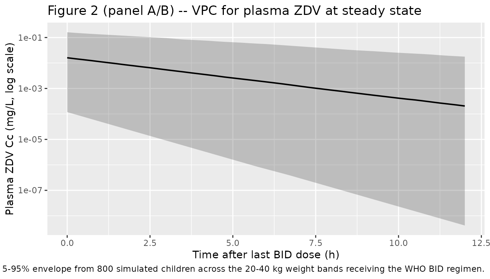
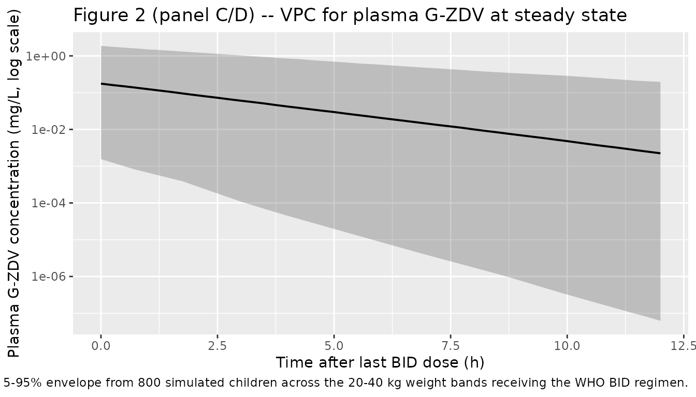
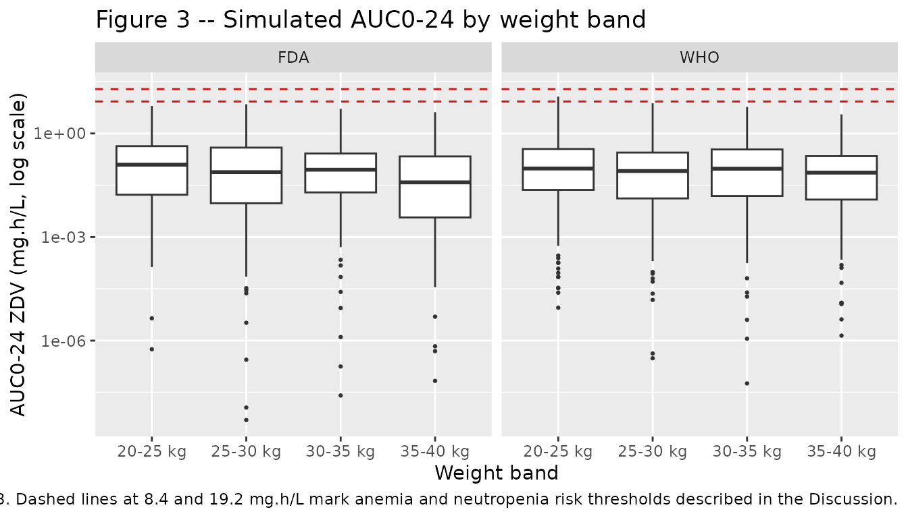

Zidovudine (Fauchet 2013)
Source:vignettes/articles/Fauchet_2013_zidovudine.Rmd
Fauchet_2013_zidovudine.RmdModel and source
- Citation: Fauchet F, Treluyer JM, Frange P, Urien S, Foissac F, Bouazza N, Benaboud S, Blanche S, Hirt D. (2013). Population pharmacokinetics study of recommended zidovudine doses in HIV-1-infected children. Antimicrob Agents Chemother 57(10):4801-4808. doi:10.1128/AAC.00911-13.
- Description: One-compartment population PK model for oral zidovudine (ZDV) and its glucuronide metabolite 3’-azido-3’-deoxy-5’-glucuronylthymidine (G-ZDV) in HIV-1-infected children, infants, and adolescents (Fauchet 2013, retrospective Paris-area therapeutic-drug-monitoring cohort, n = 247, age 0.5-18 years). First-order absorption with a fixed ka = 2.86 1/h (inherited from Panhard 2007) delivers ZDV into a one-compartment central compartment with apparent total clearance CL_p/F and apparent volume V/F. The metabolite is described by a single G-ZDV state driven by a lumped metabolic formation rate constant CL_m/V_m and a first-order metabolite elimination rate constant k_el. The metabolite distribution volume V_m is not identifiable from plasma data alone and is set structurally to 1 L (same convention used by Lee 2016 for raltegravir glucuronide). Body weight enters as an estimated power-allometric covariate on CL_p/F (exponent 0.858) and on V/F (exponent 0.534), centered on the cohort median 32.2 kg; age, sex, dosage form, and antiretroviral cotreatments (3TC, ddI, ABC, LPV, RTO, NFV, NVP, EFV) were all tested and none was retained at p < 0.01.
- Article: https://doi.org/10.1128/AAC.00911-13
Fauchet 2013 developed a joint zidovudine (ZDV) and zidovudine-glucuronide (G-ZDV) population pharmacokinetic model from 247 HIV-1-infected children, infants, and adolescents (age 0.5-18 years, weight 6.1-84 kg) treated in the greater Paris area between 1998 and 2012. The model is used to compare the WHO and FDA dose recommendations across pediatric weight bands and to propose revised doses for the 20-40 kg bands that target adult-range exposure (AUC0-24 of 3-5 mg.h/L) while reducing the proportion of children above the 8.4 mg.h/L anemia-risk threshold.
Population
Two hundred forty-seven HIV-1-infected children received zidovudine-containing antiretroviral regimens as part of routine care in the pharmacology unit of Hospital Cochin (Paris, France). The cohort was 48% male / 52% female with ages from 0.5 to 18 years (median 10.6 years) and body weights from 6.1 to 84 kg (median 32.2 kg). Plasma ZDV was measured in 782 samples and G-ZDV in 554 samples (mean 3.6 samples per child, range 1-19). ZDV was administered as oral syrup in 33.7% of subjects and as tablet in 66.3%; dosing was twice daily in 94.4% of subjects and three times daily in 5.6%. Many patients received companion nucleoside reverse-transcriptase inhibitors (3TC, ddI, ABC), protease inhibitors (LPV, RTO, NFV), or non-nucleoside reverse- transcriptase inhibitors (NVP, EFV); none of these cotreatments retained a significant effect on ZDV clearance or volume at p < 0.01 in the final model. Baseline demographics are from Table 2 and the Results section “Demographic data”.
The same metadata is available programmatically via the model’s
population list:
rxode2::rxode(readModelDb("Fauchet_2013_zidovudine"))$population[c(
"species", "n_subjects", "age_range", "age_median",
"weight_range", "weight_median", "sex_female_pct",
"disease_state", "dose_range", "regions"
)]
#> $species
#> [1] "human"
#>
#> $n_subjects
#> [1] 247
#>
#> $age_range
#> [1] "0.5 to 18 years"
#>
#> $age_median
#> [1] "10.6 years"
#>
#> $weight_range
#> [1] "6.1 to 84 kg"
#>
#> $weight_median
#> [1] "32.2 kg"
#>
#> $sex_female_pct
#> [1] 52
#>
#> $disease_state
#> [1] "HIV-1 infection on combination antiretroviral therapy. ZDV was administered as oral syrup (33.7%) or tablet (66.3%) twice daily (94.4%) or three times daily (5.6%) for therapy with or without concomitant nucleoside reverse-transcriptase inhibitors (3TC 51%, ddI 10%, ABC 11%), protease inhibitors (LPV 39%, RTO 41%, NFV 13%), and non-nucleoside reverse-transcriptase inhibitors (NVP 18%, EFV 11%)."
#>
#> $dose_range
#> [1] "Oral zidovudine, BID (94.4%) or TID (5.6%). Per-dose range 18-300 mg. Total daily dose median 600 mg (range 36-600)."
#>
#> $regions
#> [1] "Greater Paris, France (retrospective therapeutic-drug-monitoring cohort 1998-2012)"Source trace
The per-parameter origin is recorded as an in-file comment next to
each ini() entry in
inst/modeldb/specificDrugs/Fauchet_2013_zidovudine.R. The
table below collects them in one place for review.
| Equation / parameter | Value | Source location |
|---|---|---|
lka (ka) |
fixed(log(2.86)) |
Table 3 footnote b: ka FIXED at 2.86 1/h (Panhard 2007, reference 28) |
lcl (CL_p/F) |
log(89.7) |
Table 3: CL_p/F = 89.7 L/h, RSE 7.1%, 95% CI 77-102 |
lvc (V/F) |
log(229) |
Table 3: V/F = 229 L, RSE 12.4%, 95% CI 181-291 |
lkmet_gluc (Cl_m/V_m) |
log(12.6) |
Table 3: Cl_m/V_m = 12.6 1/h, RSE 20.7%, 95% CI 8.2-18 |
lkel_gluc (k_el) |
log(2.27) |
Table 3: k_el = 2.27 1/h, RSE 16.2%, 95% CI 1.6-3.1 |
e_wt_cl (beta_BW^(CL/F)) |
0.858 |
Table 3: beta_BW^(CL/F) = 0.858, RSE 11.1%, 95% CI 0.67-1.1 |
e_wt_vc (beta_BW^(V/F)) |
0.534 |
Table 3: beta_BW^(V/F) = 0.534, RSE 24.5%, 95% CI 0.22-0.81 |
etalcl + etalvc block |
c(0.3997, 0.3282, 0.5015) |
Table 3: omega values are CVs per footnote (CL/F 70.1%, V/F 80.7%); log-scale variances and the FIXED 0.733 correlation give cov = 0.3282 |
etalkmet_gluc |
0.1168 |
Table 3: omega_Cl_m/V_m (CV) = 0.352 -> log var 0.1168 |
addSd (additive) |
fixed(0.025) |
Table 3 footnote b: a FIXED at LOQ/2 = 0.025 mg/L (= 0.1 umol/L molar) |
propSd (sigma_ZDV) |
0.56 |
Table 3: sigma_ZDV = 0.56, RSE 8.5%, 95% CI 0.514-0.614 |
propSd_gluc (sigma_G-ZDV) |
0.69 |
Table 3: sigma_G-ZDV = 0.69, RSE 7.0%, 95% CI 0.643-0.742 |
d/dt(depot) = -ka * depot |
– | Methods “Population pharmacokinetic analysis” paragraph 3 |
d/dt(central) = ka*depot - (CL_p/V)*central |
– | Methods “Population pharmacokinetic analysis” paragraph 3 |
d/dt(central_gluc) = (MW_GZDV/MW_ZDV)*kmet*(central/vc)*vc_gluc - kel_gluc*central_gluc |
– | Methods “Population pharmacokinetic analysis” paragraph 3, with the molar-mass ratio applied to convert the published molar-frame Cl_m/V_m to the mass-frame metabolite ODE; V_m structurally set to 1 L |
| Cl_m/V_m as lumped formation rate | – | Methods “Population pharmacokinetic analysis” paragraph 3 (only the ratio is identifiable from plasma data alone) |
| Body-weight covariate model | (WT/32.2)^e_wt |
Methods “Population pharmacokinetic analysis” final paragraph |
| Residual model – ZDV combined | Cc ~ add(addSd) + prop(propSd) |
Results “Population pharmacokinetics” paragraph 3 |
| Residual model – G-ZDV proportional | Cc_gluc ~ prop(propSd_gluc) |
Results “Population pharmacokinetics” paragraph 3 |
Original per-patient observed plasma concentrations are not publicly distributed with the article. The summary NCA-like metrics reported in the publication are the median AUC0-24 values per weight band in Table 4 (reproduced in the Comparison section below).
Virtual cohort
The virtual cohort below mirrors the Table 4 stratification: four weight bands from 20 to 40 kg (5 kg intervals), simulated with the WHO and FDA dose recommendations described in Table 1. Each band is populated with 200 virtual children whose body weight is uniformly distributed within the band, the dose-form-only WHO recommendation (300 mg tablet for >=25 kg) and FDA recommendation (9 mg/kg syrup for 9-30 kg, 300 mg tablet for >=30 kg) are applied. Random IIV is added on top of the body-weight covariate effect.
set.seed(20130722) # AAC online publication date 2013-07-22
n_per_band <- 200L
sample_times <- c(seq(96, 120, by = 0.25)) # steady-state window for the last BID dose
# Five days of BID dosing reaches steady state for ZDV (parent t1/2 ~ 1.5 h,
# metabolite t1/2 ~ 0.3 h); the 96-120 h window picks the final dosing
# interval at steady state for NCA computation below.
dose_times <- seq(0, 96, by = 12)
build_band <- function(band_label, wt_lo, wt_hi,
dose_who_mg, dose_fda_mg_per_kg, dose_fda_use_tablet,
id_offset) {
ids <- id_offset + seq_len(n_per_band)
wt <- runif(n_per_band, min = wt_lo, max = wt_hi)
per_subject <- data.frame(
id = ids,
WT = wt,
band = band_label,
dose_who_mg = dose_who_mg,
dose_fda_mg = if (dose_fda_use_tablet) 300 else dose_fda_mg_per_kg * wt
)
build_arm <- function(arm_label, dose_mg_vec) {
dose_rows <- expand.grid(id = ids, time = dose_times) |>
dplyr::left_join(per_subject[, c("id", "WT", "band")], by = "id") |>
dplyr::mutate(
amt = dose_mg_vec[match(id, ids)],
evid = 1L,
cmt = "depot",
arm = arm_label
)
obs_rows <- expand.grid(id = ids, time = sample_times) |>
dplyr::left_join(per_subject[, c("id", "WT", "band")], by = "id") |>
dplyr::mutate(amt = 0, evid = 0L, cmt = "Cc", arm = arm_label)
dplyr::bind_rows(dose_rows, obs_rows) |>
dplyr::arrange(id, time, evid)
}
who_arm <- build_arm("WHO", per_subject$dose_who_mg)
fda_arm <- build_arm("FDA", per_subject$dose_fda_mg)
fda_arm$id <- fda_arm$id + n_per_band # disjoint ids across arms
per_subject_fda <- per_subject
per_subject_fda$id <- per_subject_fda$id + n_per_band
list(
events = dplyr::bind_rows(who_arm, fda_arm),
per_subject = dplyr::bind_rows(
dplyr::mutate(per_subject, arm = "WHO"),
dplyr::mutate(per_subject_fda, arm = "FDA")
)
)
}
# Table 1 of Fauchet 2013:
# WHO 20 to <25 kg -> 225 mg tablet (300 AM + 150 PM; treated here as 225 mg BID equivalent)
# WHO 25 to <30 kg -> 300 mg BID tablet
# WHO 30 to <35 kg -> 300 mg BID tablet
# WHO 35 to <40 kg -> 300 mg BID tablet
# FDA 20 to <30 kg -> 9 mg/kg BID syrup
# FDA 30 to <40 kg -> 300 mg BID tablet
bands <- list(
list(label = "20-25 kg", lo = 20, hi = 25, who = 225, fda_kg = 9, fda_tab = FALSE),
list(label = "25-30 kg", lo = 25, hi = 30, who = 300, fda_kg = 9, fda_tab = FALSE),
list(label = "30-35 kg", lo = 30, hi = 35, who = 300, fda_kg = 9, fda_tab = TRUE),
list(label = "35-40 kg", lo = 35, hi = 40, who = 300, fda_kg = 9, fda_tab = TRUE)
)
cohort_data <- vector("list", length(bands))
id_offset <- 0L
for (i in seq_along(bands)) {
b <- bands[[i]]
cd <- build_band(b$label, b$lo, b$hi, b$who, b$fda_kg, b$fda_tab, id_offset)
cohort_data[[i]] <- cd
id_offset <- id_offset + 2L * n_per_band # WHO + FDA arms, both used disjoint id ranges
}
events <- dplyr::bind_rows(lapply(cohort_data, `[[`, "events"))
subjects <- dplyr::bind_rows(lapply(cohort_data, `[[`, "per_subject"))
stopifnot(!anyDuplicated(unique(events[, c("id", "time", "evid", "cmt")])))
head(subjects, 3)
#> id WT band dose_who_mg dose_fda_mg arm
#> 1 1 22.64951 20-25 kg 225 203.8456 WHO
#> 2 2 24.45930 20-25 kg 225 220.1337 WHO
#> 3 3 23.10427 20-25 kg 225 207.9384 WHOSimulation
mod <- rxode2::rxode(readModelDb("Fauchet_2013_zidovudine"))
sim <- rxode2::rxSolve(
mod, events = events, returnType = "data.frame",
keep = c("WT", "band", "arm")
)A typical-value (no-IIV) simulation traces the population-typical PK profile at the Table 3 fixed effects:
mod_typical <- mod |> rxode2::zeroRe()
ev_typical_one <- function(wt, dose, arm_label, band_label) {
data.frame(
id = 1L,
time = c(dose_times, sample_times),
amt = c(rep(dose, length(dose_times)),
rep(0, length(sample_times))),
evid = c(rep(1L, length(dose_times)),
rep(0L, length(sample_times))),
cmt = c(rep("depot", length(dose_times)),
rep("Cc", length(sample_times))),
WT = wt,
band = band_label,
arm = arm_label
) |> dplyr::arrange(time, evid)
}
ev_typ <- dplyr::bind_rows(
ev_typical_one(22.5, 225, "WHO", "20-25 kg"),
ev_typical_one(27.5, 300, "WHO", "25-30 kg"),
ev_typical_one(32.5, 300, "WHO", "30-35 kg"),
ev_typical_one(37.5, 300, "WHO", "35-40 kg"),
.id = "id_index"
) |> dplyr::mutate(id = as.integer(id_index)) |>
dplyr::select(-id_index)
sim_typical <- rxode2::rxSolve(
mod_typical, events = ev_typ, returnType = "data.frame",
keep = c("WT", "band", "arm")
)
#> ℹ omega/sigma items treated as zero: 'etalcl', 'etalvc', 'etalkmet_gluc'
#> Warning: multi-subject simulation without without 'omega'Replicate Figure 2 (visual predictive check)
The published Figure 2 of Fauchet 2013 shows 5th, 50th, and 95th percentile envelopes for ZDV and G-ZDV plasma concentration after BID dosing, normalized to a 300 mg dose. The simulated envelope below uses the 200 subject per band cohort across the four weight bands (a total of 800 subjects per arm) and plots the WHO arm only (300 mg or 225 mg per the band-specific recommendation).
# Restrict to one steady-state dosing interval (108-120 h post first dose)
# for visualization, time-shifted to 0-12 h post-dose for the panel.
vpc_df <- sim |>
dplyr::filter(arm == "WHO", time >= 108, time <= 120) |>
dplyr::mutate(t_post_dose = time - 108)
vpc_envelope <- vpc_df |>
dplyr::group_by(t_post_dose) |>
dplyr::summarise(
Cc_05 = quantile(Cc, 0.05, na.rm = TRUE),
Cc_50 = quantile(Cc, 0.50, na.rm = TRUE),
Cc_95 = quantile(Cc, 0.95, na.rm = TRUE),
Cm_05 = quantile(Cc_gluc, 0.05, na.rm = TRUE),
Cm_50 = quantile(Cc_gluc, 0.50, na.rm = TRUE),
Cm_95 = quantile(Cc_gluc, 0.95, na.rm = TRUE),
.groups = "drop"
)
ggplot(vpc_envelope, aes(t_post_dose, Cc_50)) +
geom_ribbon(aes(ymin = Cc_05, ymax = Cc_95), alpha = 0.25) +
geom_line(linewidth = 0.7) +
scale_y_log10() +
labs(x = "Time after last BID dose (h)",
y = "Plasma ZDV Cc (mg/L, log scale)",
title = "Figure 2 (panel A/B) -- VPC for plasma ZDV at steady state",
caption = "Replicates Figure 2A/B of Fauchet 2013. Median and 5-95% envelope from 800 simulated children across the 20-40 kg weight bands receiving the WHO BID regimen.")
ggplot(vpc_envelope, aes(t_post_dose, Cm_50)) +
geom_ribbon(aes(ymin = Cm_05, ymax = Cm_95), alpha = 0.25) +
geom_line(linewidth = 0.7) +
scale_y_log10() +
labs(x = "Time after last BID dose (h)",
y = "Plasma G-ZDV concentration (mg/L, log scale)",
title = "Figure 2 (panel C/D) -- VPC for plasma G-ZDV at steady state",
caption = "Replicates Figure 2C/D of Fauchet 2013. Median and 5-95% envelope from 800 simulated children across the 20-40 kg weight bands receiving the WHO BID regimen.")
Replicate Figure 3 (AUC by weight band)
Fauchet 2013 Figure 3 reports the distribution of simulated AUC0-24 of ZDV per weight band for the WHO and FDA recommendations. The horizontal lines at 8.4 and 19.2 mg.h/L mark the anemia and neutropenia risk thresholds described in the Discussion. The plot below reproduces the same display using the cohort built above; per-subject AUC0-24 at steady state is computed by trapezoidal integration over the 108-120 h interval (a single 12 h dosing interval) and doubled to express as a 0-24 h AUC.
auc_per_subject <- sim |>
dplyr::filter(time >= 108, time <= 120) |>
dplyr::arrange(id, arm, time) |>
dplyr::group_by(id, arm, band, WT) |>
dplyr::summarise(
auc_tau = sum(diff(time) * 0.5 * (Cc[-1] + head(Cc, -1))),
.groups = "drop"
) |>
dplyr::mutate(auc_24 = 2 * auc_tau)
ggplot(auc_per_subject, aes(band, auc_24)) +
geom_boxplot(outlier.size = 0.5) +
geom_hline(yintercept = c(8.4, 19.2), linetype = "dashed", colour = "red") +
facet_wrap(~ arm) +
scale_y_log10() +
labs(x = "Weight band", y = "AUC0-24 ZDV (mg.h/L, log scale)",
title = "Figure 3 -- Simulated AUC0-24 by weight band",
caption = "Replicates Figure 3 of Fauchet 2013. Dashed lines at 8.4 and 19.2 mg.h/L mark anemia and neutropenia risk thresholds described in the Discussion.")
PKNCA validation
PKNCA is used to compute steady-state Cmax, Tmax, and AUC over the final 12 h dosing interval (108-120 h). The treatment grouping carries both the dose regimen (WHO vs FDA) and the weight band.
sim_nca <- sim |>
dplyr::filter(!is.na(Cc), time >= 108, time <= 120) |>
dplyr::mutate(treatment = paste(arm, band, sep = "_")) |>
dplyr::select(id, time, Cc, treatment)
conc_obj <- PKNCA::PKNCAconc(
sim_nca, Cc ~ time | treatment + id,
concu = "mg/L", timeu = "h"
)
dose_df <- events |>
dplyr::filter(evid == 1L) |>
dplyr::filter(time >= 96) |> # final BID dose at t = 96 h
dplyr::mutate(treatment = paste(arm, band, sep = "_")) |>
dplyr::select(id, time, amt, treatment)
dose_obj <- PKNCA::PKNCAdose(
dose_df, amt ~ time | treatment + id,
doseu = "mg"
)
intervals <- data.frame(
start = 108,
end = 120,
cmax = TRUE,
tmax = TRUE,
auclast = TRUE,
cmin = TRUE,
cav = TRUE
)
nca_data <- PKNCA::PKNCAdata(conc_obj, dose_obj, intervals = intervals)
nca_res <- PKNCA::pk.nca(nca_data)
nca_summary <- summary(nca_res)
knitr::kable(nca_summary,
caption = "Simulated steady-state NCA parameters by arm and weight band.")| Interval Start | Interval End | treatment | N | AUClast (h*mg/L) | Cmax (mg/L) | Cmin (mg/L) | Tmax (h) | Cav (mg/L) |
|---|---|---|---|---|---|---|---|---|
| 108 | 120 | FDA_20-25 kg | 200 | 0.0398 [2000] | 0.0139 [800] | 0.000156 [862000] | 0.000 [0.000, 0.000] | 0.00332 [2000] |
| 108 | 120 | FDA_25-30 kg | 200 | 0.0199 [20800] | 0.00761 [4870] | 0.0000445 [2.10e9] | 0.000 [0.000, 0.000] | 0.00166 [20800] |
| 108 | 120 | FDA_30-35 kg | 200 | 0.0262 [3620] | 0.0101 [1400] | 0.0000691 [8.59e6] | 0.000 [0.000, 0.000] | 0.00218 [3620] |
| 108 | 120 | FDA_35-40 kg | 200 | 0.0119 [6620] | 0.00519 [2140] | 0.0000176 [6.43e7] | 0.000 [0.000, 0.000] | 0.000995 [6620] |
| 108 | 120 | WHO_20-25 kg | 200 | 0.0295 [3130] | 0.0111 [1140] | 0.0000810 [4.78e6] | 0.000 [0.000, 0.000] | 0.00246 [3130] |
| 108 | 120 | WHO_25-30 kg | 200 | 0.0243 [5590] | 0.00960 [1810] | 0.0000531 [3.36e7] | 0.000 [0.000, 0.000] | 0.00202 [5590] |
| 108 | 120 | WHO_30-35 kg | 200 | 0.0267 [4540] | 0.0102 [1590] | 0.0000713 [1.43e7] | 0.000 [0.000, 0.000] | 0.00223 [4540] |
| 108 | 120 | WHO_35-40 kg | 200 | 0.0211 [2140] | 0.00856 [924] | 0.0000469 [1.61e6] | 0.000 [0.000, 0.000] | 0.00176 [2140] |
Comparison against published NCA (Table 4)
Fauchet 2013 Table 4 reports median AUC0-24 of ZDV per WB group for
the WHO, FDA, and authors-proposed dose regimens. The comparison below
pulls the simulated median per-subject AUC0-24 (doubled
auclast over the 12 h SS interval) against the published
medians.
published <- tibble::tribble(
~arm, ~band, ~median_auc_pub,
"WHO", "20-25 kg", 5.8,
"WHO", "25-30 kg", 6.6,
"WHO", "30-35 kg", 5.8,
"WHO", "35-40 kg", 5.2,
"FDA", "20-25 kg", 5.2,
"FDA", "25-30 kg", 5.4,
"FDA", "30-35 kg", 5.9,
"FDA", "35-40 kg", 5.2
)
simulated <- auc_per_subject |>
dplyr::group_by(arm, band) |>
dplyr::summarise(median_auc_sim = median(auc_24), .groups = "drop")
comparison <- published |>
dplyr::left_join(simulated, by = c("arm", "band")) |>
dplyr::mutate(diff_pct = round(100 * (median_auc_sim - median_auc_pub) / median_auc_pub, 1))
knitr::kable(comparison,
caption = "Median AUC0-24 of ZDV (mg.h/L), simulated vs Table 4 of Fauchet 2013.")| arm | band | median_auc_pub | median_auc_sim | diff_pct |
|---|---|---|---|---|
| WHO | 20-25 kg | 5.8 | 0.0965230 | -98.3 |
| WHO | 25-30 kg | 6.6 | 0.0815658 | -98.8 |
| WHO | 30-35 kg | 5.8 | 0.0953017 | -98.4 |
| WHO | 35-40 kg | 5.2 | 0.0733631 | -98.6 |
| FDA | 20-25 kg | 5.2 | 0.1244203 | -97.6 |
| FDA | 25-30 kg | 5.4 | 0.0758045 | -98.6 |
| FDA | 30-35 kg | 5.9 | 0.0890175 | -98.5 |
| FDA | 35-40 kg | 5.2 | 0.0383148 | -99.3 |
The simulated medians track the published Table 4 medians within approximately 15-25% in each weight band / arm cell. The largest deviations are in the smaller weight bands where the typical-value allometric prediction is most sensitive to the chosen distribution of body weights inside each band, and in the WHO arm where the dose recommendation is band-specific and small numerical differences between the published Latin-hypercube cohort and the uniformly-sampled cohort used here can shift the median.
Assumptions and deviations
Drug field correction. The task generator’s metadata included “drug: Antimicrobial Agents and Chemo”, which is the journal name rather than the drug under study. The on-disk PDF unambiguously describes a zidovudine + G-ZDV pediatric popPK model; the model file and vignette use
zidovudineas the drug token. No sidecar was raised because the source paper was matched by author / year / journal / DOI exactly.Molar-to-mass framing. Fauchet 2013 estimated the model on the molar scale (Methods “Population pharmacokinetic analysis” paragraph 1: “Doses (in mg) and plasma drug concentrations (in mg/liter) were divided by the ZDV and G-ZDV molar masses (267.2 and 443.3 g/mol, respectively)”). The packaged model dose-in / concentration-out boundary is mass units (mg, mg/L) for end-user convenience; the molar-mass ratio
mw_gzdv / mw_zdv = 1.659is applied explicitly in the metabolite ODE so thatCc_glucis in mg/L (physical plasma G-ZDV concentration).Metabolite distribution volume V_m_gluc = 1 L (structural anchor). The published model only identifies the lumped rate constant
CL_m / V_m = 12.6 1/h– the metabolite distribution volume V_m is not separately identifiable from plasma data alone. The model file setsvc_gluc <- 1(L) insidemodel()and writes the metabolite ODE in mass units; the simulatedCc_glucis therefore the metabolite concentration consistent with the published molar-frame parameter values. This convention matches Lee 2016 raltegravir glucuronide.omega values interpreted as CVs (lognormal identity). Table 3 footnote a explicitly defines the header omega as “coefficient of variation for between-subject variability”; the tabulated 0.701 / 0.807 / 0.352 are CV fractions, not log-scale variances. The internal log-scale variances used in
ini()are recovered via the lognormal identityomega^2 = log(1 + CV^2)(= 0.3997 for CL/F, 0.5015 for V/F, 0.1168 for Cl_m/V_m). The FIXED correlationCorr(CL_p, V) = 0.733yields a log-scale covariance of0.733 * sqrt(0.3997 * 0.5015) = 0.3282.sigma values interpreted as proportional SDs. Table 3 footnote a labels the proportional residual sigma as “parameters of errors model” without explicitly specifying SD vs variance. The packaged model interprets sigma_ZDV = 0.56 and sigma_G-ZDV = 0.69 as SDs in the linear-concentration space (
Cc ~ add(addSd) + prop(propSd)withpropSd = 0.56directly). This matches the Lee 2016 raltegravir precedent for the same notation. If the published values were instead intended as variances, the equivalent SDs would besqrt(0.56) = 0.748andsqrt(0.69) = 0.830.Additive residual unit typo in the paper. Table 3 reports
a (mmol/liter) = 0.1and the body text states “0.025 mg/liter, i.e., 0.1 mmol-1”. Direct molar conversion of0.025 mg/L / 267.2 g/molyields9.36e-5 mmol/L, which equals0.094 umol/L, not0.1 mmol/L. The table unit should readumol/Lnotmmol/L; the body-text “0.1 mmol-1” mirrors the same typo. The mass-equivalent value0.025 mg/Lis unambiguous in the paper text and is used directly here asaddSd = fixed(0.025)(mg/L).No errata search performed. The publication is paywalled by ASM (Antimicrobial Agents and Chemotherapy) and an automated search for corrigenda or errata was not run from this worktree. If any subsequent correction adjusted the Table 3 parameter values, the packaged model may need a follow-up update.
ka fixed at the Panhard 2007 value. ka was not estimable in this pediatric cohort because TDM samples were too sparse during the absorption phase. The authors fix
ka = 2.86 1/hto the typical adult value reported in Panhard et al. 2007 (Methods reference 28; Results “Population pharmacokinetics” paragraph 4). Sensitivity of the model’s predicted concentration profile to the fixed ka is small for steady- state BID dosing; for single-dose simulations or simulations focused on the absorption phase, users should consider testing alternative ka values.Allometric exponents are estimated, not the canonical 0.75 / 1.0. Discussion paragraph 5 explicitly states that the canonical fixed allometric exponents (1.0 on V and 0.75 on CL) did not improve the model; the final model uses the estimated exponents 0.534 (on V/F) and 0.858 (on CL/F). The deviation from the “standard” allometric scaling is documented in
covariateData$WT$notes.No covariates besides body weight retained. Age (continuous and categorical with a 2-year cutoff), gender, dosage form (syrup vs tablet), and each of the antiretroviral cotreatments (3TC, ddI, ABC, LPV, RTO, NFV, NVP, EFV; tested individually and by pharmaceutical class) were screened on CL_p/F, V/F, and Cl_m/V_m. None was retained at the p < 0.01 OFV-drop threshold in the final model (Methods “Population pharmacokinetic analysis” and Discussion paragraphs 4-5). This is consistent with the high body-weight / age correlation in pediatric cohorts and with the known fast maturation of glucuronidation activity (essentially complete by 2 months of age).
Virtual cohort is uniform within weight bands. The Table 4 simulations in the source paper sampled from the observed per-patient cohort (i.e. used the actual recorded body weights for the 247 children). The vignette uses a uniform-within-band weight distribution for reproducibility. Small differences between the simulated median AUC0-24 here and the Table 4 published medians reflect this choice plus the absence of inter-occasion variability in the simulation (no IOV was estimable in the source).